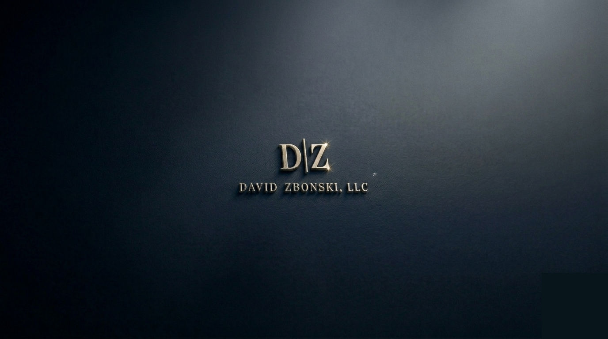

Hi, I’m David Zbonski.
When I was young and finally earning enough to start investing, I did what most people are told to do—I reached out to financial advisors for help. But because I didn’t have much money, I was turned away. More than once.
So I taught myself. I studied, saved, invested, and stayed disciplined. It worked. Over time, I built the financial security I once feared I’d never have. But I’ve never forgotten what it felt like to be dismissed simply because my account balance was small.
That experience shaped me.
Once I reached financial freedom, I made a decision: I wanted to give back. I wanted to be the advisor I wish I’d had—the one who doesn’t judge, doesn’t gatekeep, and doesn’t turn people away for starting small.
I’ve spent decades learning what actually works, and that knowledge is what helped me change my life. Now I use it to help others change theirs.
If you want guidance, I’m here for you. I’m not concerned with how much you have today. I’m focused on where you can go tomorrow. My goal is simple: to help you reach financial success—whatever that looks like for you.
Everyone deserves a chance to build a better future. I’m here to help you to get yours.